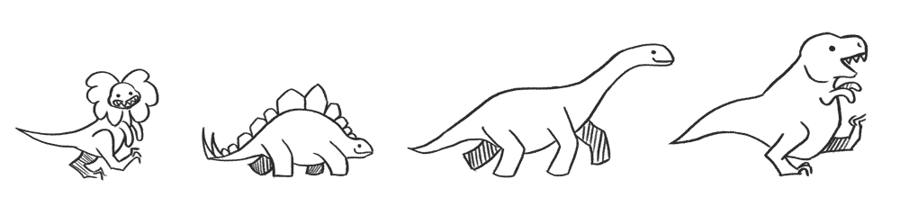

Test the Web Forward
W3C's one stop shop for Open Web Platform testing.
As the Web morphed from a document exchange system to the World's most advanced application delivery platform, the requirements on the underlining technologies and the browsers implementing them changed dramatically. Web applications built today need a robust and interoperable Web that only thorough browser testing can guarantee.
To meet this new challenge, W3C is launching an unprecedented effort to rethink and scale up its testing offering.